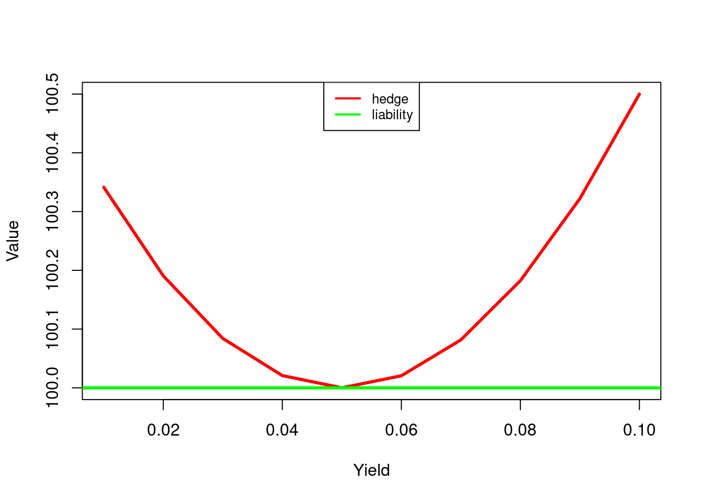

library(linprog)
library(xtable)
library(empfin)In this chapter, we introduce the two broad categories of Fixed Income risk management strategies: immunization and dedication. The problem being addressed is simple: given a liability stream (anticipated future payments, certain or contingent), and given a initial budget, how should the funds be invested so that the proceeds from the investment portfolio may fund the liability, under all foreseeable interest rate scenarios?
The immunization strategy is a two steps process. The manager first identifies the interest rate risk factors, and then constructs a portfolio such that assets and liabilities have the same exposure to the risk factors, therefore, the global position (assets - liabilities) is immunized against movements of the risk factors.
The dedication or cash flow matching strategy takes a different approach, but is conceptually simple. The goal of this strategy is to avoid interest rate risk by constructing a portfolio that will generate in a timely manner the cash flow needed to meet the liability, thereby evacuating interest risk by construction.
In practice, fund managers often use a mix of both strategies. The two strategies are next described and illustrated.
The method is best described by the following elementary example. A fund manager has a certain liability \(L_T\) to be paid at time \(T\). The present value of this liability is \(L_T(1+r)^{-T}\). The manager wants to invest that budget in a portfolio that will provide the wealth \(L_T\) at the required time, regardless of future interest rates.
She constructs a portfolio that generates cash flows \(F_i\) at time \(T_i\). Cash flows paid at time \(T_i<T\) will be reinvested till \(T\), and those occurring after \(T\) will be sold at \(T\). The value of this portfolio at \(T\) is thus:
\[\begin{aligned} V_T &=& \sum_i F_i (1+r)^{T-T_i} \end{aligned}\]
and must be equal to \(L_T\). Let’s compute the Variation of \(V_T\):
\[\begin{align} \frac{\partial V_T}{\partial r} &=& \sum_i F_i (T-T_i)(1+r)^{T-T_i-1} \\ &=& \left[ \sum_i F_i T (1+r)^{-T_i} - \sum_i F_i T_i (1+r)^{T_i} \right](1+r)^{T-1} \\ &=& V_T \left[ T \frac{\sum_i F_i (1+r)^{-T_i}}{V_T} - \frac{\sum_i F_i T_i (1+r)^{T_i}}{V_T} \right](1+r)^{T-1} \end{align}\]
In the last expression, we recognize the definition of Duration ((16.3)), so that the Variation of \(V_T\) is finally:
\[\frac{\partial V_T}{\partial r} = V_T \left[ T - D \right](1+r)^{T-1}\]
where \(D\) is the duration of the stream of cash flows \(F_i\). This equation shows that if the stream of cash flows \(F_i\) has the same Duration as the investment horizon \(T\), then, in a first-order approximation, the wealth \(V_T\) is insensitive to changes in yield. If yield deceases, the lower value of the reinvested cash flows will be offset by the higher present value of the cash flows maturing after \(T\). The converse is true if yield increases. This investment strategy, which aims at preserving wealth at a given investment horizon is called immunization.
How to construct the assets portfolio is described next. Let the liability \(V_T=100\), \(T=5, V_0 = V_T (1+r)^{-T}\). Current yield is \(r=.05\). The investment portfolio will be made of two bonds described below:
Table 21.1: Bonds available for immunization
| Coupon | Maturity | |
|---|---|---|
| A | 0.05 | 3 |
| B | 0.06 | 7 |
We next determine the quantities \(q_A\) and \(q_B\) of each bond in the investment portfolio, so that the present value and the Duration of the portfolio match those of the liability. Remember from section \[sec:duration-of-a-portfolio\] that the Duration of a portfolio is a weighted average of the Durations of the bonds in the portfolio.
We express these two conditions by the following equations:
\[\begin{align} V_0 & = & q_A P_A + q_B P_B \\ T & = & q_A \frac{P_A D_A}{V_0} + q_B \frac{P_B D_B}{V_0} \end{align}\]
or, using matrix notation:
\[A Q = b\]
with
\[A = \begin{pmatrix} P_A & P_B \\ \frac{P_A D_A}{V_0} & \frac{P_B D_B}{V_0} \end{pmatrix} Q = \begin{pmatrix} q_A \\ q_B \end{pmatrix} b = \begin{pmatrix} V_0 \\ T \end{pmatrix}\]
This system is solved for \(q_A\) and \(q_B\) to determine the portfolio composition.
r <- 0.05
T <- 5
V_0 <- 100 *(1+r)^(-T)
P_A <- SimpleBondPrice(.05, 3, yield=r)
P_B <- SimpleBondPrice(.06, 7, yield=r)
D_A <- SimpleDuration(.05, 3, yield=r)
D_B <- SimpleDuration(.06, 7, yield=r)
A <- matrix(c(P_A, P_B, D_A*P_A/V_0, D_B*P_B/V_0), nrow=2, byrow=TRUE)
b <- matrix(c(V_0, T), nrow=2)
Q = solve(A, b)
q_A <- Q[1]
q_B <- Q[2]The solution is \(q_A=0.24, q_B=0.51\). To verify the robustness of the selected portfolio, we next simulate the wealth at horizon \(T\), under various scenarios for \(r\).
Let \(V_A\) (resp. \(V_B\)) be the wealth at time \(T\) generated by 1 unit of bond A (resp. B).
\[V_A = \sum_i F_A(t_i) (1+r)^{(T-T_i)}\]
where \(F_A(t)\) is the cash flow generated at time \(t\) by one unit of bond \(A\). The wealth at time \(T\) is the compounded value of the cash flows occurring before \(T\), and the discounted value of the cash flows occurring after \(T\).
FutureValue <- function(coupon, n, yield, T) {
100*sum(sapply(1:n, function(i) ifelse(i<n, coupon/(1 + yield)^(i-T), (1+coupon)/(1+yield)^(n-T))))
}
r <- seq(.01, .1, .01)
V_A <- sapply(r, function(x) FutureValue(.05, 3, x, 5))
V_B <- sapply(r, function(x) FutureValue(.06, 7, x, 5))
Hedge <- q_A*V_A + q_B*V_B
Figure ?? plots the value of the investment portfolio under various yield scenarios. We observe that, under the restrictive conditions of this experiment, the hedge has always a greater value than the liability at horizon \(T\). One should keep in mind, however, that this experiment is done under the assumption that yields for all maturities are identical, and that they all move up or down in parallel. More sophisticated methods address these limitations. The most popular method is to immunize separately various maturity segments. Another approach is to identify several yield curve risk factors, such as a parallel shift, a change in slope and a change in convexity, and immunize the liability against movements along each factor.
A completely different approach is to construct a portfolio that generates the necessary cash flow just in time, so as to minimize the need to re-invest cash that becomes available too early, or sell cash flows that occur too late. This strategy, called Dedication or cash-flow matching, is now described.
Assume that, over the next 5 years, you must pay the amounts \(L(t), t=1, \ldots, 5\) summarized in Table ??. In order to meet this liability, you can invest in a portfolio of 5 bonds described in table 21.3.
Table 21.2: Liability per year
| Year | Liability |
|---|---|
| 1 | 100 |
| 2 | 200 |
| 3 | 150 |
| 4 | 400 |
| 5 | 300 |
Table 21.3: Bonds available for dedication
| Bond | Maturity | Coupon | Yield |
|---|---|---|---|
| 1 | 1 | .05 | .050 |
| 2 | 2 | .07 | .075 |
| 3 | 3 | .06 | .058 |
| 4 | 4 | .05 | .049 |
| 5 | 5 | .08 | .081 |
At every period, you can re-invest excess cash flow at a rate \(r\), chosen conservatively, but cannot borrow. You want, of course, to construct the cheapest portfolio that will match the liability.
To formalize the strategy, we will use the following notation:
The cash balance at each period is the compounded value of the cash balance from the previous period, augmented of the difference between the inflows and the outflows:
\[C(t) = (1+r) C(t-1) + \sum_i q_i F_i(t) - L(t)\]
The objective is to determine \(q_i, i=1, \ldots, 5\) and the initial cash balance \(C(0)\), so that:
The investment strategy can be determined by solving the following linear program:
\[\begin{align} \mbox{min} & \sum_i q_i P_i \tag{21.1} \\ \mbox{s.t.} & \notag \\ & (1+r) C(t-1) + \sum_i q_i F_i(t) -C(t) = L(t) \tag{21.2} \\ & q_i >= 0, i=1, \ldots, n \notag \\ & C(t) >= 0, t=1, \ldots, 5 \notag \end{align}\]
There is no need to define an initial cash balance because there is already a one-year bond in the investment portfolio. It is convenient to express the problem in matrix notation:
\[\begin{align} \mbox{min} & P^T x \\ \mbox{s.t.} & \notag \\ & A x = b \notag \\ & x >= 0 \notag \end{align}\]
where the column vector \(x\) represents the variables of the problem: \[x = (q_1, \ldots, q_5, c_1, \ldots , c_5)^T\]
and \(P\) the vector of asset prices at time \(t=0\):
\[P = (P_1, \ldots, P_5, 0, 0, 0, 0, 0)^T\]
The cash flow definition equations in matrix form are defined with:
\[b = \begin{pmatrix} 100 \\ 200 \\ 150 \\ 400 \\ 300 \end{pmatrix}\]
\[A = \begin{pmatrix} 105 & 7 & 6& 5& 8& -1& 0& 0& 0& 0 \\ 0& 107& 6& 5& 8& 1+r& -1& 0& 0& 0 \\ 0& 0& 106& 5& 8& 0& 1+r& -1& 0& 0 \\ 0& 0& 0& 105& 8& 0& 0& 1+r& -1& 0 \\ 0& 0& 0& 0& 108& 0& 0& 0& 1+r& -1 \end{pmatrix}\]
The program is set up as follows:
r <- .01
Amat = rbind(c(105, 7, 6, 5, 8, -1, 0, 0, 0, 0),
c(0, 107,6, 5, 8, 1+r, -1, 0, 0, 0),
c(0, 0, 106, 5, 8, 0, 1+r, -1, 0, 0),
c(0, 0, 0, 105, 8, 0, 0, 1+r, -1, 0),
c(0, 0, 0, 0, 108, 0, 0, 0, 1+r, -1))The right hand side of (21.2):
bvec = c(100, 200, 150, 400, 300)
names(bvec) <- c('T1', 'T2', 'T3', 'T4', 'T5');The vector \(P\), the cost of assets at time \(t=0\):
y <- .06
cvec = c(SimpleBondPrice(.05, 1, yield=y),
SimpleBondPrice(.07, 2, yield=y),
SimpleBondPrice(.06, 3, yield=y),
SimpleBondPrice(.05, 4, yield=y),
SimpleBondPrice(.08, 5, yield=y),
0, 0, 0, 0, 0)
names(cvec) <- c('B1', 'B2', 'B3', 'B4', 'B5', 'C1', 'C2', 'C3', 'C4', 'C5');The program is solved by
lp.sol <- solveLP(cvec, bvec, Amat, const.dir=rep('>=', length(bvec)))The optimal portfolio composition is shown in Table 21.4.
Table 21.4: Dedicated portfolio
| Quantity | |
|---|---|
| B1 | 0.41 |
| B2 | 1.44 |
| B3 | 1.04 |
| B4 | 3.60 |
| B5 | 2.78 |
Since we can have as many bonds as time period, and that the \(A\) matrix is full row-rank, we have a perfect match between the generated cash flows and the liability stream, at a cost that is therefore exactly equal to the present value of the liability:
df <- sapply(1:5, function(i) 1/(1+y)^i)
PV <- sum(df*bvec)
print(paste('dedication cost:', round(lp.sol$opt,2), 'PV of liability:', round(PV,2)))## [1] "dedication cost: 939.3 PV of liability: 939.3"Any discrepancy would provide an opportunity for risk-less arbitrage.
Consider now the same problem, but with fewer bonds available to construct the dedicated portfolio (bond 3 is deleted from the set):
Amat = rbind(c(105, 7, 5, 8, -1, 0, 0, 0, 0),
c(0, 107,5, 8, 1+r, -1, 0, 0, 0),
c(0, 0, 5, 8, 0, 1+r, -1, 0, 0),
c(0, 0, 105, 8, 0, 0, 1+r, -1, 0),
c(0, 0, 0, 108, 0, 0, 0, 1+r, -1))
cvec = c(SimpleBondPrice(.05, 1, yield=y),
SimpleBondPrice(.07, 2, yield=y),
SimpleBondPrice(.05, 4, yield=y),
SimpleBondPrice(.08, 5, yield=y),
0, 0, 0, 0, 0)
names(cvec) <- c('B1', 'B2', 'B4', 'B5', 'C1', 'C2', 'C3', 'C4', 'C5');
res2 <- solveLP(cvec, bvec, Amat, const.dir=rep('>=', length(bvec)))The optimal portfolio is displayed in table ??. We no longer have a perfect match, and some cash must be reinvested from period to period, as shown in table 21.5: a cash balance is re-invested from period 2 to period 3.
Table 21.5: Dedicated portfolio
| Period | Cash Balance | |
|---|---|---|
| C1 | 1 | 0.0 |
| C2 | 2 | 108.7 |
| C3 | 3 | 0.0 |
| C4 | 4 | 0.0 |
| C5 | 5 | 0.0 |
The dedication cost ($ 943.86) is naturally higher than the present value of the liability ($ 939.3), since the solution involves reinvesting cash from the second to the third period, at a rate that is lower than the current yield.
Cash-flow matching is a popular strategy for managing short-term liabilities, because it minimizes transactions. It would not be economical to use such strategy for long term liabilities, of for complex cash flows. There is therefore, a natural division of labor between the two strategies that we have sketched.